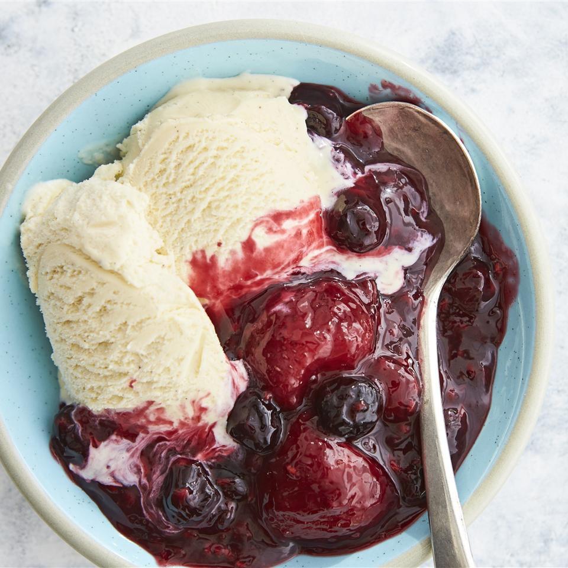

Warm Berry Compote

Description
This berry compote is made in a slow cooker with frozen berries and orange juice. It's a yummy dessert by itself or over ice cream.
- Prep Time: 5 mins
- Cook Time: 1 hr 35 mins
- Total Time: 1 hr 40 mins
- Servings: 6
Click for Recipe